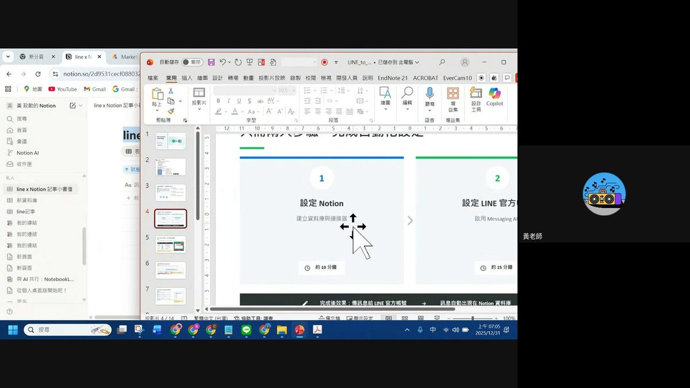
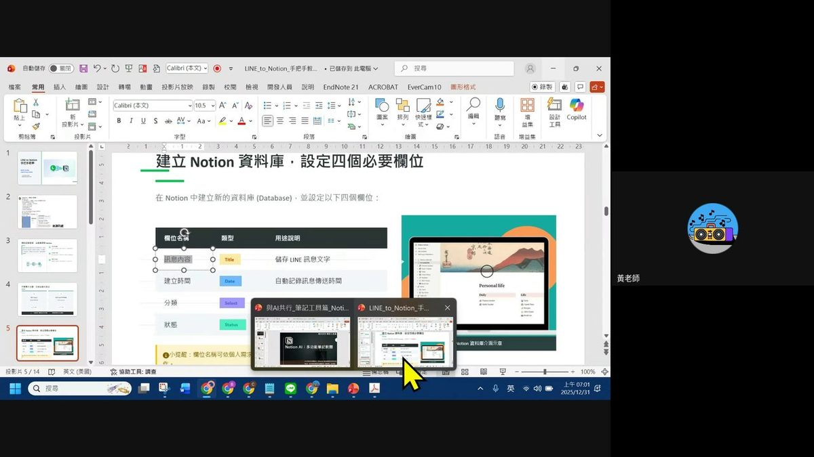
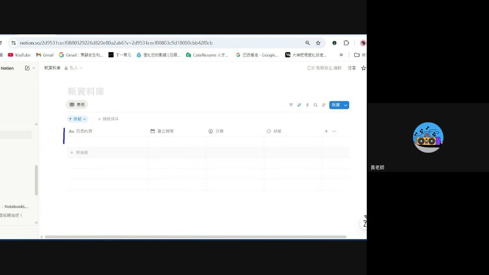
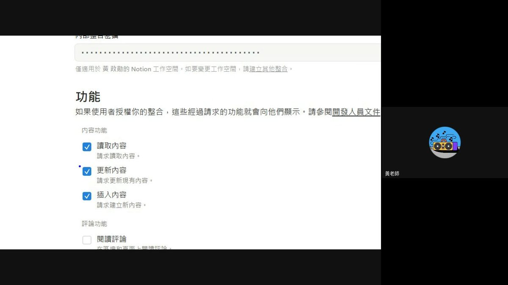
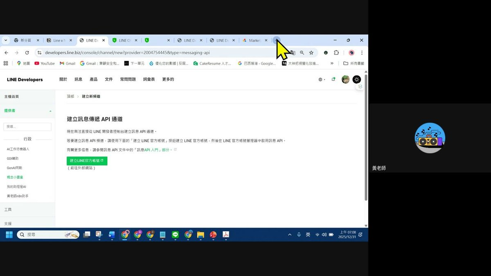
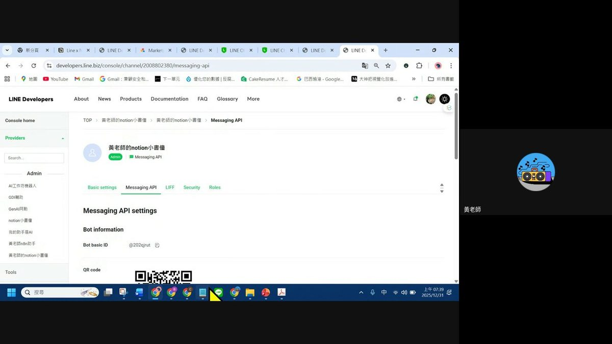
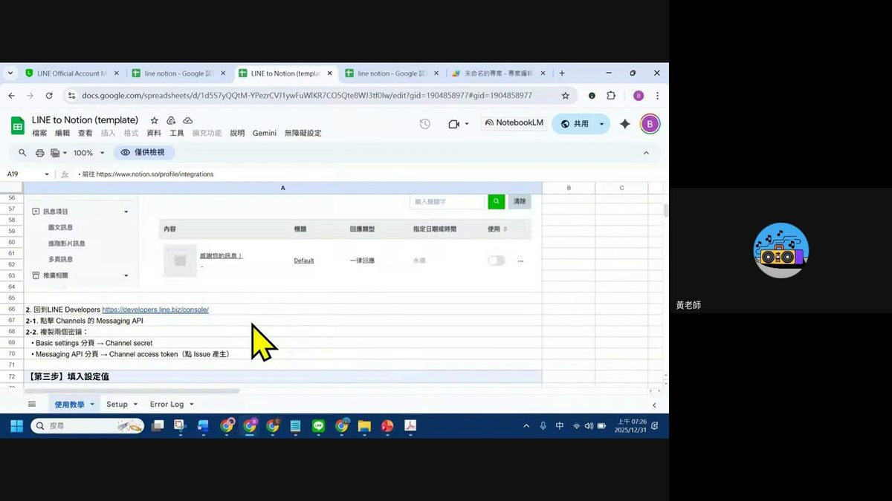
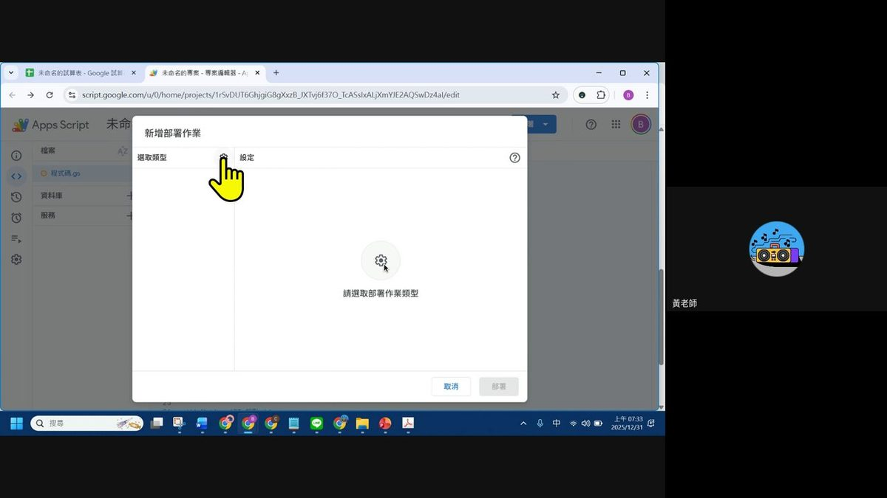
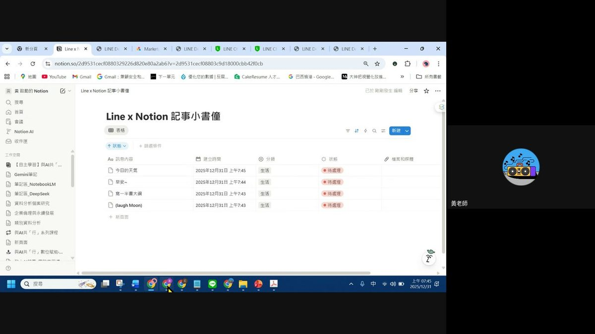

0. 課程資訊與教材
| 課程名稱 | EP10「自動化概念＋Notion x LINE 實作」 |
|---|---|
| 頻道 | 生成式 AI 應用電台・晨學講堂 |
| 形式 | 真人直播實作課，講師全程共享螢幕操作、學員邊聽邊跟做，直播結尾開放 Q&A |
| 教材 | 本集資料夾只有一支約 67 分鐘的錄影，沒有簡報 pptx，也沒有現成課堂筆記 |
| 一句話先懂 | 把 LINE 官方帳號當「輸入口」、Notion 資料庫當「儲存庫」，中間用 Google Apps Script 寫一小段免費的橋接程式，訊息傳進 LINE 就會自動出現在 Notion 裡——完全不用 n8n，也不用任何付費自動化平台。 |

⚠️ 誠實聲明：本集資料夾僅有錄影、沒有簡報。本頁內容整理自完整逐字稿聽打（1947 句、涵蓋全程 00:00–66:57）與畫面逐幀親眼判讀（每 20 秒一張，共 201 張，含 Notion、LINE Developers、Google Apps Script 等實際操作畫面），不是推測或改寫的內容。文中時間戳為逐字稿實際對應秒數。
1. 為什麼要學自動化：今天要做什麼
開場破題（00:44–03:00）
- 今天的目標：「你不用透過 n8n，你也不用透過任何付費的工具，就可以讓 LINE 直接去連接你的 Notion」——這是老師開場第一句話定的調。
- 基本模式：先在 Notion 建帳號、設定好表格，接著把訊息傳給一個 LINE 官方帳號，官方帳號就會自動把資料彙整到 Notion 的那張表格。
- 應用想像：代辦事項、研究訪談記錄、生活靈感，甚至傳照片轉文字稿之後彙整摘要，都是同一套模式的延伸——今天教的只是一個 sample，後續怎麼玩看每個人自己的需求去調整。
- 跟 n8n 的關係先說清楚：今天不會安裝 n8n（留到下次課），但過程中會順便用今天做的東西講解 n8n 的核心概念——「節點」與「串聯」。n8n 之所以能幫你做自動分析，就是因為把各種 AI 工具的節點串起來；理解每個節點怎麼接起來，是學 n8n 最重要的基礎。
- 老師特別交代來源：今天示範的這個自動化流程不是老師自己寫的，是「脆」（Threads）上一位網友寫的範例，老師認為很適合當作 n8n／自動化入門的教材，所以拿來做延伸示範，並在課堂上明確告知出處。
「你不用透過 n8n，你也不用透過任何付費的工具，就可以讓 LINE 直接去連接你的 Notion。」
—— 01:20 開場定調
💡 老師在直播一開始還用「LINE 記事」表格帶大家實際傳訊息測試效果——傳一句話給官方帳號，畫面上的 Notion 表格就即時多一筆記錄，讓大家對「等一下要做出來的東西長什麼樣」先有畫面。
2. 第一步：建立 Notion 資料庫（四個必要欄位）
07:05–14:52 實際操作
- 打開 notion.so，用 Google 帳號登入，進入工作區首頁，右上角按「新增頁面」。
- 選右下角的「資料庫」→「空白資料庫」（不要用現成範本，因為等一下的程式碼是照固定欄位名稱寫死的，要自己手動建）。
- 依序把預設的第一欄改名為 訊息內容（型態維持文字／標題）。
- 新增第二個欄位 建立時間，型態選「日期」，這樣才能知道每則訊息是什麼時候傳進來的。
- 新增第三個欄位 分類，型態選「選取」（Select），之後可以自訂選項如「生活」「記帳」「教學」，讓 Notion 自動幫你把訊息分類、做成不同視圖或公式。
- 新增第四個欄位 狀態，型態選「狀態」（Status），一定要建立 待處理 與 已完成 兩個選項（老師特別強調「這兩個一定要填」），因為程式碼會照這個狀態名稱去抓取資料型態；其餘像「進行中」等預設選項若用不到可以刪掉，顏色可以自己配（老師示範已完成配橙色、待處理配紅色，純美觀不影響設定）。
- 把資料庫命名（老師示範取名「小助手」），完成後 Notion 會立即自動存檔。
| 欄位名稱 | 型態 | 用途說明 |
|---|---|---|
| 訊息內容 | Title（標題） | 儲存 LINE 傳進來的訊息文字 |
| 建立時間 | Date（日期） | 自動記錄訊息傳送時間 |
| 分類 | Select（選取） | 依內容分類，如生活／記帳／教學 |
| 狀態 | Status（狀態） | 必須包含「待處理」「已完成」兩個選項，供後續流程判斷 |


⚠️ 建好資料庫之後，接下來要拿到它的「網址」：右上角「分享」→「複製連結」，貼到記事本存起來。網址裡
notion.so/ 後面一長串英數字、到 ? 問號之前的那一段，就是這個資料庫的 ID，之後串接 Google Apps Script 一定會用到，老師特別提醒要先框起來記下來，「不然你等一下會忘記」。3. 第二步：打開 Notion 對外天線（Integration／API Key）
17:45–26:16 實際操作 · 老師的比喻：「天線」
資料庫只是把資料放在自己家裡，外面的程式要進得來，需要 Notion 提供的一支「對外天線」——也就是 Integration（整合）。老師整段用「架天線、接 WiFi 密碼」的比喻帶大家理解 API Key 的概念，非常好懂。
- 到 notion.so/my-integrations（老師直接貼網址給大家），按「新整合」。
- 幫這支「天線」取名（建議跟資料庫同名，例如「小助手」），選擇要插到哪個工作區（房子），需要的話上傳一個 icon。
- 按「儲存」，如果跳出帳號選擇提示，選自己的工作區即可，完成後就會進入「整合設定」畫面。
- 最關鍵的一步：在「功能」區塊裡，一定要把 讀取內容、更新內容、插入內容 三個權限都打開——因為等一下 LINE 傳進來的資訊要能「新增」進 Notion，缺了插入或更新權限就串不起來。
- 在「內部整合密鑰」欄位按「顯示」再按「複製」，把這串 API Key 存到剛剛的記事本，命名清楚（例如「notion API」），等一下要靠它來當「天線的密碼」。
- 回到剛剛建好的資料庫頁面，右上角三個點「⋯」→「連結」→「編輯連結」，在「私人」分類裡找到剛剛建立的整合（天線），選取後按「確認」——這一步等於「把天線架到資料庫這個房子裡」。
- 驗證方式：回到資料庫頁面右上角三個點，看到「連結」欄位已經列出剛剛的整合名稱，就代表天線接好了。

💡 老師的口語比喻整理：資料庫＝家，Integration＝天線，API Key／Integration Secret＝天線的 WiFi 密碼，把整合連結到資料庫＝把天線插到房子裡。有了天線＋密碼，外部程式（Google Apps Script）才能對這個房子做讀寫。
4. 第三步：建立 LINE 官方帳號（Messaging API）
27:00–39:19 實際操作
Notion 那一頭設定好之後，換到「輸入口」這一頭：建立一個 LINE 官方帳號，並開通它的 Messaging API 功能，才能讓外部程式接收使用者傳進來的訊息。老師提醒這一段「很多人會卡在這裡，它要調來調去」，是整堂課最容易出錯的地方之一。
- 到 LINE Developers（developers.line.biz）主控台，如果還沒有「提供者」（Provider），先建立一個提供者。
- 提供者底下按「Create」新增一個「Channel」，型態選 Messaging API。
- 依畫面指示填入官方帳號名稱、你的 Email，第一次使用需要用 LINE 帳號登入完成基本驗證。
- 接著會被導到 LINE 官方帳號後台（Official Account Manager）的建立表單：填帳號名稱、Email、公司／服務所在地區、業種（大分類／小分類）。認證流程先選「稍後進行認證」（正式認證要付費，課堂上不需要），同意條款後帳號就建立完成。
- 回到帳號右側的「設定」，做三件事：
- 「回應設定」裡把 加入歡迎訊息 關掉（避免干擾自動化流程）。
- 把 聊天 打開。
- 找到 Messaging API 分頁並啟用它——同意條款、確認後，LINE 就會把這個帳號初步設定為可以走 API 的頻道。
- 啟用 Messaging API 後，切到 Basic settings 分頁，複製 Channel secret（頻道密鑰）存到記事本；再切到 Messaging API 分頁，找到 Channel access token，按「issue」產生一長串通行碼後複製存起來——這兩把金鑰是等一下橋接程式一定要用到的。


⚠️ 老師提醒：如果你原本就已經有其他官方 LINE 帳號（例如之前課程用過的「智能助教」），一樣可以用同一套方式接，不用重新建立——只要到那個既有帳號的 Basic Setting 頁面，一樣能拿到 Channel secret 跟 Channel access token。
5. 第四步：用 Google Apps Script 接橋（webhook 串接）
41:00–51:09 實際操作 · 最複雜的一段
Notion 天線、LINE 金鑰都拿到手之後，還缺一段「翻譯機」：LINE 傳來的訊息格式，跟 Notion API 吃的格式不一樣，中間要用程式把兩邊接起來，並且要有一個外部網址讓 LINE 能夠打進來——這正是老師之前教過的 Google Apps Script（Google 試算表「擴充功能」裡的 App Script）派上用場的地方。這一段程式碼是網路上現成的範本，課堂上不需要自己從零寫。
- 開一個新的 Google 試算表，「擴充功能」→「Apps Script」，把老師提供的完整程式碼整段貼上（程式碼是別人寫好的公開範本，不需要自己改邏輯）。
- 按「部署」→「新增部署作業」，類型選 網頁應用程式，「具有存取權的使用者」選 所有人（這裡的「所有人」是指任何知道網址的人都能打這支 API，不是公開讓所有人看得到你的資料），按「部署」。
- 第一次部署會要求「授權」：選自己的 Google 帳號 → 進階 → 前往（不安全）→ 允許，這是 Google 對「未驗證應用程式」的正常警告，不是程式有問題。
- 部署完成後，程式會在試算表裡自動生成一份「Setup」設定頁，並附上使用說明（程式碼裡直接寫了操作步驟文字）：
Apps Script 內建說明文字（實際畫面內容）📌 使用說明 1. 在 B1~B4 填入對應的 Token 和 ID 2. 在 B5 填入允許的 LINE User ID（多個以逗號分隔，留空則允許所有人） 3. 部署此專案為網頁應用程式 4. 將部署網址設定到 LINE Developers 的 Webhook URL 📌 Notion Database 必要欄位
- 照設定頁指示，把四個值分別貼進 B1~B4：LINE Channel access token、LINE Channel secret、Notion API Key（Integration Secret）、Notion 資料庫 ID；B5 是選填的「白名單」——只填自己的 LINE User ID，就能限制只有你自己傳的訊息會被讀取，避免別人也傳訊息進來污染資料庫。
- 四個值填完後，再部署一次（新增部署作業，一樣選網頁應用程式、所有人），這次部署完成會產生一個正式的 Web App 網址，把它複製起來。
- 回到 LINE Developers 該頻道的 Messaging API 分頁，找到 Webhook settings，按「編輯」把剛剛複製的網址貼上，按「更新」，再按「Verify（驗證）」——出現 success 就代表兩邊真的接通了；如果失敗，要回頭檢查 Apps Script 那邊四個設定值有沒有貼對。



💡 老師特別建議：不要直接用他分享的試算表副本操作（因為綁定校務帳號，部署權限可能受限），最保險的方式是「擴充功能 → AppsScript → 把整段程式碼複製走 → 自己開一個全新的 Google 試算表貼上」，全部自己開、自己部署最不會踩雷。他也提醒 Google 有時候第一次部署會判定失敗，遇到的話等大約 15 分鐘後再重新部署一次通常就會成功。
6. 實測成功＋常見雷點
52:00–62:14 課堂實測與 Q&A
- 大家用手機掃剛剛畫面上的 QR code，加官方帳號為好友。
- 直接傳一句話（老師實測傳「寫一本書的大綱」），LINE 那頭傳出去的瞬間，Notion 資料庫這邊就自動多出一筆新記錄，訊息內容、建立時間、分類（預設）、狀態（待處理）全部自動填好。
- 多位學員同時測試都成功同步，證明整條「LINE → Google Apps Script → Notion」的串接是通的。
常見雷點與限制（課堂上實際被問到、實際示範到的）
| 狀況 | 老師的說明 |
|---|---|
| 傳圖片／檔案沒有被記錄 | 目前程式碼預設只抓文字訊息；要支援圖片或檔案，需要在 Notion 資料庫加一個對應欄位（例如「檔案和媒體」），並回到 Apps Script 程式碼裡加入「多媒體類型」的判斷邏輯——老師當場示範資料庫加欄位、並提到程式碼要跟著改，但完整改法留給大家自己延伸練習。 |
| 怕陌生人也傳訊息污染資料庫 | 可以在 Apps Script 設定頁的 B5（允許的 LINE User ID）只填自己的 ID，官方帳號就只會讀取白名單內的人傳的訊息，「他不會讀其他的帳號」。 |
| Webhook 驗證失敗 | 回頭檢查 Apps Script 裡四個設定值（token、secret、資料庫 ID、API Key）有沒有貼對／貼全，通常問題都出在這裡；也可能是部署還沒用最新版網址。 |
| 部署／授權跑不動、卡住 | Google 對新專案的自動化授權偶爾會失敗，等待約 15 分鐘後重新部署即可，不用重建整個專案。 |
| 想用自己既有的官方 LINE 帳號 | 完全可以，不必重新建立新帳號，一樣到 Basic Setting 頁面拿 Channel secret／token 即可接上同一套流程。 |
7. 重點整理：自動化的心法＋跟 n8n 的關係
56:00–66:57 收尾與延伸
- 四步驟串起來，就是今天做的事：① Notion 建資料庫（四個必要欄位）② 開 Notion 對外天線（Integration，開三個讀寫權限）③ 建 LINE 官方帳號並啟用 Messaging API（拿到兩把金鑰）④ 用 Google Apps Script 當橋樑（填四個值＋部署成 Web App＋設定 LINE Webhook）。
- 跟 n8n 的差別：n8n 可以用付費方案把這些節點直接「拖拉串接」，速度快很多，不用像今天這樣手動一段一段接、慢慢除錯；但今天這一套完全免費，而且逼著你搞懂每一段串接背後在做什麼（Channel secret 是什麼、Integration 權限是什麼、Webhook 是什麼），這正是老師刻意選擇先講這個範例的原因——「理解每一個節點怎麼去把它接起來」是學 n8n 前最重要的地基。
- 可延伸的方向：把「代辦事項」「記帳」等不同用途的分類串接起來、支援圖片與檔案上傳、把 Notion 裡的資料再丟給 AI 做摘要分析——這些都可以在今天這套雛型上繼續疊加。
- 老師自己的真實用法（也是這堂課最想傳達的心法）：把工作用的 LINE 訊息，習慣性轉貼給自己的這個「小幫手」官方帳號，它就自動幫忙整理進 Notion；之後只要打開 Notion 看整理過的清單就好，不用一直在 LINE 裡面翻找。「所以我只要看代表的資訊就好。」
- 影片後續會由團隊剪成分段教學上傳 YouTube 頻道，方便大家照著一步一步重做。
「你的 LINE 多多少少都會有工作訊息，我都會習慣把工作的訊息貼到我的那個小幫手，他就幫我整理，然後我只要看代表的資訊就好。」
—— 65:57 課程收尾金句
8. 資料來源與製作說明
- 原始教材：EP10「自動化概念＋Notion x LINE 實作」晨學講堂直播錄影，全長約 66 分 57 秒，資料夾內僅有此錄影，沒有簡報 pptx，也沒有現成課堂筆記。
- 製作方式：下載完整錄影 → 抽取音軌並以 faster-whisper（small 模型，繁中）跑出完整逐字稿，共 1947 句、涵蓋 00:00 至 66:57 全程 → 逐字稿全文通讀一遍，整理實際教學步驟與重點 → 以每 20 秒一張的頻率抽出畫面幀，逐幀親眼判讀（Notion 資料庫設定、LINE Developers 主控台、Google Apps Script 編輯器與部署流程、實測成功的 Notion 同步結果等關鍵畫面）→ 依真實操作順序整理成本頁筆記，並挑選 9 張代表性畫面截圖直接嵌入。
- 誠實聲明：本頁所有步驟、金句、時間戳，均可對應逐字稿與畫面截圖，沒有推測或臆造內容。少數逐字稿因直播現場背景音／口音辨識誤差而語意不完整之處（例如工具名稱「App Script」被誤轉寫為「以色列」「以色有黨」等同音誤植），已依畫面與上下文判讀校正為正確用詞。老師示範用的自動化範本程式碼，其原作者為「Threads 上一位網友」，非本集講師原創，講師於課堂上有明確告知來源。
- 介面參考：互動技能地圖頁沿用本站既有的卡片式多層導覽與遊戲化進度設計。